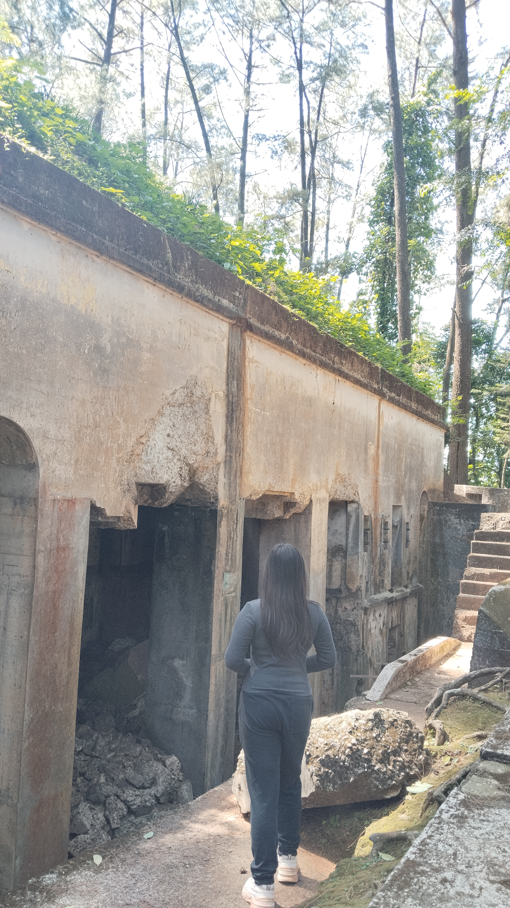
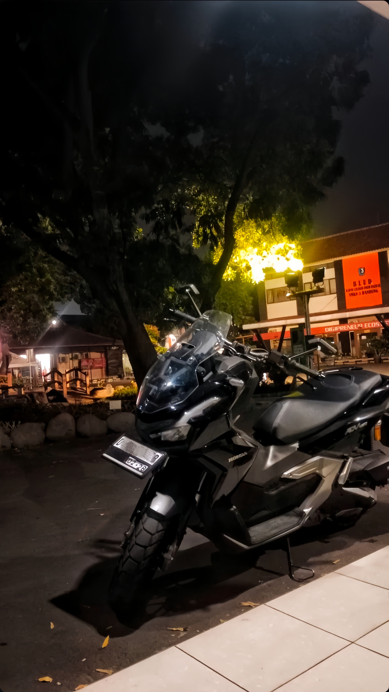
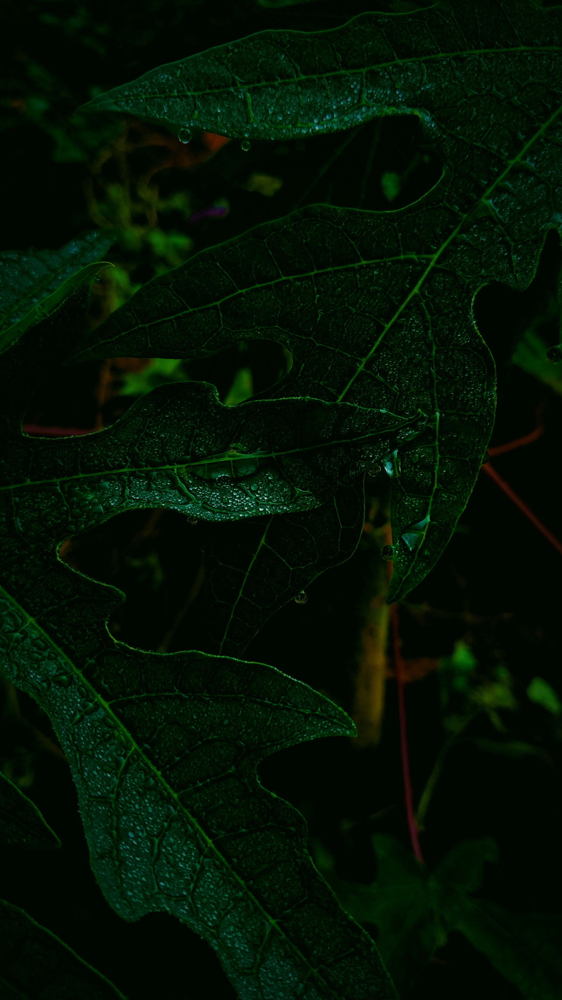

Meysya Mutiara Syamila
Saya adalah seorang mahasiswa yang memiliki ketertarikan pada dunia digital, bisnis, dan teknologi. Saya menyukai proses belajar, eksplorasi, dan pengembangan diri melalui berbagai proyek kreatif. Olahraga juga menjadi bagian dari rutinitas saya — bukan hanya untuk menjaga kesehatan, tetapi juga untuk melatih disiplin dan keseimbangan hidup.
About Me
Full Name: Meysya Mutiara Syamila
Date of Birth: 23 Mei 2007
University: STMIK LIKMI
Major: Digital Business Information System
Email: meysyamsy@gmail.com
Location: Bandung, Jawa Barat, Indonesia
Education
- STMIK LIKMI — Digital Business Information System
- SMK Negeri 3 Bandung — Manajemen Perkantoran dan Layanan Bisnis
- SMPN 38 Bandung
- SDN 148 Cibaduyut
- TKAT Nurul Azhar
Experience
- Praktek Kerja Lapangan di Pusat Sumber Daya Mineral, Batubara dan Panas Bumi — Mengelola aplikasi Naskah Dinas Elektronik untuk mengarsipkan surat masuk dan surat keluar
- Kader Kesehatan Remaja — Memberikan edukasi kesehatan kepada teman sebaya
- Project-Based Learning di Kantor Pos Indonesia — Melayani pelanggan di loket, mengantar surat dan paket ke Kantor Pos lain, mengelola laporan keuangan
- Project-Based Learning di mini market (Teaching Factory) — Melayani pelanggan, mengelola data stok barang dan keuangan
- Project-Based Learning di Hubungan Industri sekolah — Membantu kepala sekolah dalam pelaksanaan tugas hubungan industri/masyarakat
- Project-Based Learning di Ruang Jurusan Manajemen Perkantoran dan Layanan Bisnis — Membantu guru mengelola data siswa jurusan perkantoran dan logistik
- Project-Based Learning di Ruang Tata Usaha sekolah — Membantu pegawai TU mengelola pekerjaannya
- Project-Based Learning di Ruang Resepsionis sekolah — Menyambut dan membantu tamu yang membutuhkan informasi
- Project-Based Learning di Ruang Center of Excellent — Melayani siswa yang membutuhkan jasa printing
My Hobbies
🏞 Mengunjungi Curug
🚴 Sepedaan
🏊 Berenang

🏛 Mengunjungi Tempat Bersejarah

🏍 Riding
